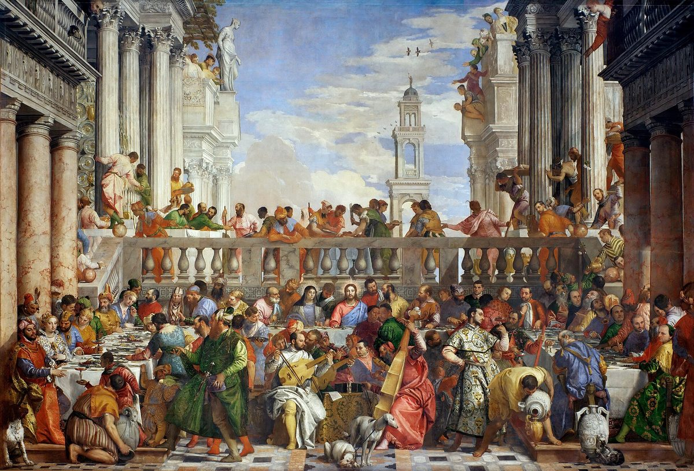

Hidden in the Frame · Louvre Museum, Paris
The Wedding Feast at Cana
Paolo Veronese · 1562–63 · Oil on canvas, 677 × 994 cm · Room 711 (Denon wing, level 1)

The story
The largest painting in the Louvre: almost seven metres high and ten metres wide, with around 130 figures. Veronese painted it for the dining hall of a monastery in Venice. It shows Jesus' first miracle: the wine runs out at a wedding, and he turns water into wine. In 1797 Napoleon's troops had it carried off to Paris – the canvas was cut up for the journey. Today it hangs directly opposite the Mona Lisa, and most people stand with their backs to it.
Details to look for
- In the centre sits Jesus, perfectly calm, the only one looking straight out of the picture. All around him Venice is partying: silk, silver, dogs, servants – more Venetian banquet than biblical wedding.
- In front, musicians are playing. By old tradition they are painters: Veronese himself in white with the viola, Titian in red on the bass, plus Tintoretto and Bassano. Between them on the table stands an hourglass – time is running, even at the finest party.
- Right above Jesus, on the balustrade, meat is being carved. Many read it as a hint of his later sacrifice – a quiet shadow in the middle of the celebration.
- At the front right a servant pours from a large jug. This is where the miracle happens: the water has turned into wine, and the guest beside him checks it in his glass.
What it says
A miracle hidden inside an enormous party: look closely and, between luxury and music, you find time, sacrifice and a quiet centre.
Open the full guide – zoom, audio guide, German & Japanese →